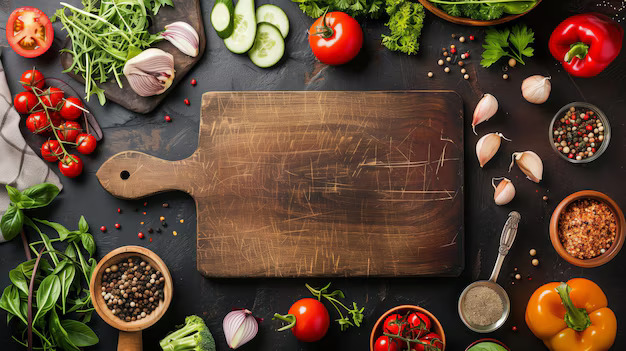

At Cooking Made Easy, our mission is to make cooking simple, affordable, and stress-free especially for college students and anyone new to the kitchen. We understand that learning to cook can feel overwhelming, whether you're living on your own for the first time or just starting your cooking journey.
That’s why we create easy, step-by-step recipes with simple ingredients, clear instructions, and helpful video tutorials. Our goal is to help you build confidence in the kitchen, save money, and enjoy making meals that taste great without needing advanced skills.
No experience? No problem. We’re here to help you cook smarter, easier, and with confidence.
